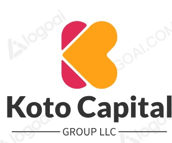

Corporate Holding & Management Company
Koto Capital Group LLC provides administrative oversight, asset management, and general business consulting services to its operational divisions.
Governance, operational support, and organizational management.
Strategic management of business and investment assets.
Guidance for growth, efficiency, and long-term value creation.
Based in New Jersey, Koto Capital Group LLC serves as a holding and management company focused on supporting its affiliated businesses through strategic leadership, financial oversight, and operational excellence.